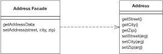
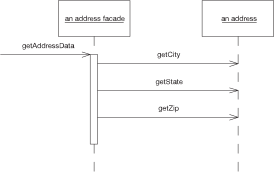
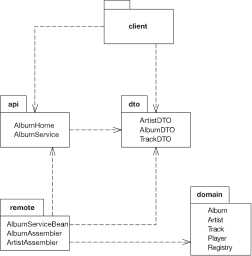
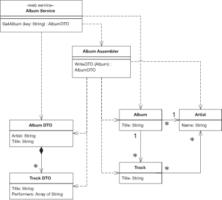

Remote Facade
Provides a coarse-grained facade on fine-grained objects to improve efficiency over a network.

In an object-oriented model, you do best with small objects that have small methods. This gives you lots of opportunity for control and substitution of behavior, and to use good intention revealing naming to make an application easier to understand. One of the consequences of such fine-grained behavior is that there’s usually a great deal of interaction between objects, and that interaction usually requires lots of method invocations.
Within a single address space fine-grained interaction works well, but this happy state does not exist when you make calls between processes. Remote calls are much more expensive because there’s a lot more to do: Data may have to be marshaled, security may need to be checked, packets may need to be routed through switches. If the two processes are running on machines on opposite sides of the globe, the speed of light may be a factor. The brutal truth is that any inter-process call is orders of magnitude more expensive than an inprocess call—even if both processes are on the same machine. Such a performance effect cannot be ignored, even for believers in lazy optimization.
As a result any object that’s intended to be used as a remote objects needs a coarse-grained interface that minimizes the number of calls needed to get something done. Not only does this affect your method calls, it also affects your objects. Rather than ask for an order and its order lines individually, you need to access and update the order and order lines in a single call. This affects your entire object structure. You give up the clear intention and fine-grained control you get with small objects and small methods. Programming becomes more difficult and your productivity slows
A Remote Facade is a coarse-grained facade [Gang of Four] over a web of fine-grained objects. None of the fine-grained objects have a remote interface, and the Remote Facade contains no domain logic. All the Remote Facade does is translate coarse-grained methods onto the underlying fine-grained objects.
How It Works
Remote Facade tackles the distribution problem which the standard OO approach of separating distinct responsibilities into different objects; and as a result it has become the standard pattern for this problem. I recognize that finegrained objects are the right answer for complex logic, so I ensure that any complex logic is placed in fine-grained objects that are designed to collaborate within a single process. To allow efficient remote access to them, I make a separate facade object that acts as a remote interface. As the name implies, the facade is merely a thin skin that switches from a coarse-grained to a finegrained interface.
In a simple case, like an address object, a Remote Facade replaces all the getting and setting methods of the regular address object with one getter and one setter, often referred to as bulk accessors. When a client calls a bulk setter, the address facade reads the data from the setting method and calls the individual accessors on the real address object (see Figure 15.1) and does nothing more. This way all the logic of validation and computation stays on the address object where it can be factored cleanly and can be used by other fine-grained objects.
In a more complex case a single Remote Facade may act as a remote gateway for many fine-grained objects. For example, an order facade may be used to get and update information for an order, all its order lines, and maybe some customer data as well.

Figure 15.1 One call to a facade causes several calls from the facade to the domain object
In transferring information in bulk like this, you need it to be in a form that can easily move over the wire. If your fine-grained classes are present on both sides of the connection and they’re serializable, you can transfer them directly by making a copy. In this case a getAddressData method creates a copy of the original address object. The setAddressData receives an address object and uses it to update the actual address object’s data. (This assumes that the original address object needs to preserve its identity and thus can’t be simply replaced with the new address.)
Often you can’t do this, however. You may not want to duplicate your domain classes on multiple processes, or it may be difficult to serialize a segment of a domain model due to its complicated relationship structure. The client may not want the whole model but just a simplified subset of it. In these cases it makes sense to use a Data Transfer Object (401) as the basis of the transfer
In the sketch I’ve shown a Remote Facade that corresponds to a single domain object. This isn’t uncommon and it’s easy to understand, but it isn’t the most usual case. A single Remote Facade would have a number of methods, each designed to pass on information from several objects. Thus, getAddressData and setAddressData would be methods defined on a class like CustomerService, which would also have methods along the lines of getPurchasingHistory and updateCreditData.
Granularity is one of the most tricky issues with Remote Facade. Some people like to make fairly small Remote Facades, such as one per use case. I prefer a coarser grained structure with much fewer Remote Facades. For even a moderate-sized application I might have just one and even for a large application I may have only half a dozen. This means that each Remote Facade has a lot of methods, but since these methods are small I don’t see this as a problem.
You design a Remote Facade based on the needs of a particular client’s usage—most commonly the need to view and update information through a user interface. In this case you might have a single Remote Facade for a family of screens, for each of which one bulk accessor method loads and saves the data. Pressing buttons on a screen, say to change an order’s status, invokes command methods on the facade. Quite often you’ll have different methods on the Remote Facade that do pretty much the same thing on the underlying objects. This is common and reasonable. The facade is designed to make life simpler for external users, not for the internal system, so if the client process thinks of it as a different command, it is a different command, even if it all goes to the same internal command.
Remote Facade can be stateful or stateless. A stateless Remote Facade can be pooled, which can improve resource usage and efficiency, especially in a B2C situation. However, if the interaction involves state across a session, then it needs to store session state somewhere using Client Session State (456) or Database Session State (462), or an implementation of Server Session State (458). As stateful a Remote Facade can hold on to its own state, which makes for an easy implementation of Server Session State (458), but this may lead to performance issues when you have thousands of simultaneous users.
As well as providing a coarse-grained interface, several other responsibilities can be added to a Remote Facade. For example, its methods are a natural point at which to apply security. An access control list can say which users can invoke calls on which methods. The Remote Facade methods also are a natural point at which to apply transactional control. A Remote Facade method can start a transaction, do all the internal work, and then commit the transaction at the end. Each call makes a good transaction because you don’t want a transaction open when return goes back to the client, since transactions aren’t built to be efficient for such long running cases.
One of the biggest mistakes I see in a Remote Facade is putting domain logic in it. Repeat after me three times; “Remote Facade has no domain logic.” Any facade should be a thin skin that has only minimal responsibilities. If you need domain logic for workflow or coordination either put it in your fine-grained objects or create a separate nonremotable Transaction Script (110) to contain it. You should be able to run the entire application locally without using the Remote Facades or having to duplicate any code.
Remote Facade and Session Facade Over the last couple of years the Session Facade [Alur et al.] pattern has been appearing in the J2EE community. In my earlier drafts I considered Remote Facade to be the same pattern as Session Facade and used the Session Facade name. In practice, however, there’s a crucial difference. Remote Facade is all about having a thin remote skin—hence my diatribe against domain logic in it. In contrast, most descriptions of Session Facade involve putting logic in it, usually of a workflow kind. A large part of this is due to the common approach of using J2EE session beans to wrap entity beans. Any coordination of entity beans has to be done by another object since they can’t be re-entrant.
As a result, I see a Session Facade as putting several Transaction Scripts (110) in a remote interface. That’s a reasonable approach, but it isn’t the same thing as a Remote Facade. Indeed, I would argue that, since the Session Facade contains domain logic, it shouldn’t be called a facade at all!
Service Layer A concept familiar to facades is a Service Layer (133). The main difference is that a service layer doesn’t have to be remote and thus doesn’t need to have only fine-grained methods. In simplifying the Domain Model (116), you From the Library of Kyle Geoffrey Passarelli often end up with coarser-grained methods, but that’s for clarity, not for network efficiency. Furthermore, there’s no need for a service layer to use Data Transfer Objects (401). Usually it can happily return real domain objects to the client.
If a Domain Model (116) is going to be used both within a process and remotely, you can have a Service Layer (133) and layer a separate Remote Facade on top of it. If the process is only used remotely, it’s probably easier to fold the Service Layer (133) into the Remote Facade, providing the Service Layer (133) has no application logic. If there’s any application logic in it, then I would make the Remote Facade a separate object.
When to Use It
Use Remote Facade whenever you need remote access to a fine-grained object model. You gain the advantages of a coarse-grained interface while still keeping the advantage of fine-grained objects, giving you the best of both worlds.
The most common use of this pattern is between a presentation and a Domain Model (116), where the two may run on different processes. You’ll get this between a swing UI and server domain model or with a servlet and a server object model if the application and Web servers are different processes.
Most often you run into this with different processes on different machines, but it turns out that the cost of an inter-process call on the same box is sufficiently large that you need a coarse-grained interface for any inter-process communication regardless of where the processes live.
If all your access is within a single process, you don’t need this kind of conversion. Thus, I wouldn’t use this pattern to communicate between a client Domain Model (116) and its presentation or between a CGI script and Domain Model (116) running in one Web server. You don’t see Remote Facade used with a Transaction Script (110) as a rule, since a Transaction Script (110) is inherently coarser grained.
Remote Facades imply a synchronous—that is, a remote procedure call — style of distribution. Often you can greatly improve the responsiveness of an application by going with asynchronous, message-based remote communication. Indeed, an asynchronous approach has many compelling advantages. Sadly, discussion of asynchronous patterns is outside the scope of this book.
Example: Using a Java Session Bean as a Remote Facade (Java)
If you’re working with the Enterprise Java platform, a good choice for a distributed facade is a session bean because its a remote object and may be stateful or stateless. In this example I’ll run a bunch of POJOs (plain old Java objects) inside an EJB container and access them remotely through a session bean that’s designed as a Remote Facade. Session beans aren’t particularly complicated, so everything should make sense even if you haven’t done any work with them before.
I feel the need for a couple of side notes here. First, I’ve been surprised by how many people seem to believe that you can’t run plain objects inside an EJB container in Java. I hear the question, “Are the domain objects entity beans?” The answer is, they can be but they don’t have to be. Simple Java objects work just fine, as in this example.
My second side note is just to point out that this isn’t the only way to use session beans. They can also be used to host Transaction Scripts (110).
In this example I’ll look at remote interfaces for accessing information about music albums. The Domain Model (116) consists of fine-grained objects that represent an artist, and album, and tracks. Surrounding this are several other packages that provide the data sources for the application (see Figure 15.2).

Figure 15.2 Packages the remote interfaces.
In the figure, the dto package contains Data Transfer Objects (401) that help move data over the wire to the client. They have simple accessor behavior and also the ability to serialize themselves in binary or XML textual formats. In the remote package are assembler objects that move data between the domain objects and the Data Transfer Objects (401). If you’re interested in how this works see the Data Transfer Object (401) discussion.
To explain the facade I’ll assume that I can move data into and out of Data Transfer Objects (401) and concentrate on the remote interfaces. A single logical Java session bean has three actual classes. Two of them make up the remote API (and in fact are Java interfaces); the other is the class that implements the API. The two interfaces are the AlbumService itself and the home object, AlbumHome. The home object is used by the naming service to get access to the distributed facade, but that’s an EJB detail that I’ll skip over here. Our interest is in the Remote Facade itself; AlbumService. Its interface is declared in the API package to be used by the client and is just a list of methods.
class AlbumService... String play(String id) throws RemoteException; String getAlbumXml(String id) throws RemoteException; AlbumDTO getAlbum(String id) throws RemoteException; void createAlbum(String id, String xml) throws RemoteException; void createAlbum(String id, AlbumDTO dto) throws RemoteException; void updateAlbum(String id, String xml) throws RemoteException; void updateAlbum(String id, AlbumDTO dto) throws RemoteException; void addArtistNamed(String id, String name) throws RemoteException; void addArtist(String id, String xml) throws RemoteException; void addArtist(String id, ArtistDTO dto) throws RemoteException; ArtistDTO getArtist(String id) throws RemoteException;
Notice that even in this short example I see methods for two different classes in the Domain Model (116): artist and album. I also see minor variations on the same method. Methods have variants that use either the Data Transfer Object (401) or an XML string to move data into the remote service. This allows the client to choose which form to use depending on the nature of the client and of the connection. As you can see, for even a small application this can lead to many methods on AlbumService.
Fortunately, the methods themselves are very simple. Here are the ones for manipulating albums:
class AlbumServiceBean...
public AlbumDTO getAlbum(String id) throws RemoteException {
return new AlbumAssembler().writeDTO(Registry.findAlbum(id));
}
public String getAlbumXml(String id) throws RemoteException {
AlbumDTO dto = new AlbumAssembler().writeDTO(Registry.findAlbum(id));
return dto.toXmlString();
}
public void createAlbum(String id, AlbumDTO dto) throws RemoteException {
new AlbumAssembler().createAlbum(id, dto);
}
public void createAlbum(String id, String xml) throws RemoteException {
AlbumDTO dto = AlbumDTO.readXmlString(xml);
new AlbumAssembler().createAlbum(id, dto);
}
public void updateAlbum(String id, AlbumDTO dto) throws RemoteException {
new AlbumAssembler().updateAlbum(id, dto);
}
public void updateAlbum(String id, String xml) throws RemoteException {
AlbumDTO dto = AlbumDTO.readXmlString(xml);
new AlbumAssembler().updateAlbum(id, dto);
}
As you can see, each method really does nothing more than delegate to another object, so it’s only a line or two in length. This snippet illustrates nicely what a distributed facade should look like: a long list of very short methods with very little logic in them. The facade then is nothing more than a packaging mechanism, which is as it should be.
We’ll just finish with a few words on testing. It’s very useful to be able to do as much testing as possible in a single process. In this case I can write tests for the session bean implementation directly: these can be run without deploying to the EJB container.
class XmlTester...
private AlbumDTO kob;
private AlbumDTO newkob;
private AlbumServiceBean facade = new AlbumServiceBean();
protected void setUp() throws Exception {
facade.initializeForTesting();
kob = facade.getAlbum("kob");
Writer buffer = new StringWriter();
kob.toXmlString(buffer);
newkob = AlbumDTO.readXmlString(new StringReader(buffer.toString()));
}
public void testArtist() {
assertEquals(kob.getArtist(), newkob.getArtist());
}
That was one of the JUnit tests to be run in memory. It showed how I can create an instance of the session bean outside the container and run tests on it, allowing a faster testing turnaround.
Example: Web Service (C#)
I was talking over this book with Mike Hendrickson, my editor at AddisonWesley. Ever alert to the latest buzzwords, he asked me if I had anything about Web services in it. I’m actually loathe to rush to every fashion—after all, given the languid pace of book publishing any “latest fashion” that I write about will seem quaint by the time you read about it. Still, it’s a good example of how core patterns so often keep their value even with the latest technological flip-flops.
At its heart a Web service is nothing more than an interface for remote usage (with a slow string-parsing step thrown in for good measure). As such the basic advice of Remote Facade holds: Build your functionality in a fine-grained manner and then layer a Remote Facade over the fine-grained model in order to handle Web services.
For the example, I’ll use the same basic problem I described previously, but concentrate just on the request for information about a single album. Figure 15.3 shows the various classes that take part. They fall into the familiar groups: album service, the Remote Facade; two Data Transfer Objects (401); three objects in a Domain Model (116); and an assembler to pull data from the Domain Model (116) into the Data Transfer Objects (401).
The Domain Model (116) is absurdly simple; indeed, for this kind of problem you’re better off using a Table Data Gateway (144) to create the Data Transfer Objects (401) directly. However, that would rather spoil the example of a Remote Facade layered over a domain model.
class Album...
public String Title;
public Artist Artist;
public IList Tracks {
get {return ArrayList.ReadOnly(tracksData);}
}
public void AddTrack (Track arg) {
tracksData.Add(arg);
}
public void RemoveTrack (Track arg) {
tracksData.Remove(arg);
}
private IList tracksData = new ArrayList();
class Artist...
public String Name;
class Track...
public String Title;
public IList Performers {
get {return ArrayList.ReadOnly(performersData);}
}
public void AddPerformer (Artist arg) {
performersData.Add(arg);
}
public void RemovePerformer (Artist arg) {
performersData.Remove(arg);
}
private IList performersData = new ArrayList();

Figure 15.3 Classes for the album Web service.
I use Data Transfer Objects (401) for passing the data over the wire. These are just data holders that flatten the structure for the purposes of the Web service.
class AlbumDTO... public String Title; public String Artist; public TrackDTO[] Tracks; class TrackDTO... public String Title; public String[] Performers;
Since this is .NET, I don’t need to write any code to serialize and restore into XML. The .NET framework comes with the appropriate serializer class to do the job.
This is a Web service, so I also need to declare the structure of the Data Transfer Objects (401) in WSDL. The Visual Studio tools will generate the WSDL for me, and I’m a lazy kind of guy, so I’ll let it do that. Here’s the XML Schema definition that corresponds to the Data Transfer Objects (401):
<s:complexType name="AlbumDTO"> <s:sequence> <s:element minOccurs="1" maxOccurs="1" name="Title" nillable="true" type="s:string" /> <s:element minOccurs="1" maxOccurs="1" name="Artist" nillable="true" type="s:string" /> <s:element minOccurs="1" maxOccurs="1" name="Tracks" nillable="true" type="s0:ArrayOfTrackDTO" /> </s:sequence> </s:complexType> <s:complexType name="ArrayOfTrackDTO"> <s:sequence> <s:element minOccurs="0" maxOccurs="unbounded" name="TrackDTO" nillable="true" type="s0:TrackDTO" /> </s:sequence> </s:complexType> <s:complexType name="TrackDTO"> <s:sequence> <s:element minOccurs="1" maxOccurs="1" name="Title" nillable="true" type="s:string" /> <s:element minOccurs="1" maxOccurs="1" name="Performers" nillable="true" type="s0:ArrayOfString" /> </s:sequence> </s:complexType> <s:complexType name="ArrayOfString"> <s:sequence> <s:element minOccurs="0" maxOccurs="unbounded" name="string" nillable="true" type="s:string" /> </s:sequence> </s:complexType>
Being XML, it’s a particularly verbose data structure definition, but it does the job.
To get the data from the Domain Model (116) to the Data Transfer Object (401) I need an assembler.
class AlbumAssembler...
public AlbumDTO WriteDTO (Album subject) {
AlbumDTO result = new AlbumDTO();
result.Artist = subject.Artist.Name;
result.Title = subject.Title;
ArrayList trackList = new ArrayList();
foreach (Track t in subject.Tracks)
trackList.Add (WriteTrack(t));
result.Tracks = (TrackDTO[]) trackList.ToArray(typeof(TrackDTO));
return result;
}
public TrackDTO WriteTrack (Track subject) {
TrackDTO result = new TrackDTO();
result.Title = subject.Title;
result.Performers = new String[subject.Performers.Count];
ArrayList performerList = new ArrayList();
foreach (Artist a in subject.Performers)
performerList.Add (a.Name);
result.Performers = (String[]) performerList.ToArray(typeof (String));
return result;
}
The last piece we need is the service definition itself. This comes first from the C# class.
class AlbumService...
[ WebMethod ]
public AlbumDTO GetAlbum(String key) {
Album result = new AlbumFinder()[key];
if (result == null)
throw new SoapException ("unable to find album with key: " +
key, SoapException.ClientFaultCode);
else return new AlbumAssembler().WriteDTO(result);
}
Of course, this isn’t the real interface definition—that comes from the WSDL file. Here are the relevant bits:
<portType name="AlbumServiceSoap"> <operation name="GetAlbum"> <input message="s0:GetAlbumSoapIn" /> <output message="s0:GetAlbumSoapOut" /> </operation> </portType> <message name="GetAlbumSoapIn"> <part name="parameters" element="s0:GetAlbum" /> </message> <message name="GetAlbumSoapOut"> <part name="parameters" element="s0:GetAlbumResponse" /> </message> <s:element name="GetAlbum"> <s:complexType> <s:sequence> <s:element minOccurs="1" maxOccurs="1" name="key" nillable="true" type="s:string" /> </s:sequence> </s:complexType> </s:element> <s:element name="GetAlbumResponse"> <s:complexType> <s:sequence> <s:element minOccurs="1" maxOccurs="1" name="GetAlbumResult" nillable="true" type="s0:AlbumDTO" /> </s:sequence> </s:complexType> </s:element>
As expected, WSDL is rather more garrulous than your average politician, but unlike so many of them, it does get the job done. I can now invoke the service by sending a SOAP message of the form
<?xml version="1.0" encoding="utf-8"?> <soap:Envelope xmlns:xsi="http://www.w3.org/2001/XMLSchema-instance" xmlns:xsd="http://www.w3.org/2001/XMLSchema" xmlns:soap="http://schemas.xmlsoap.org/soap/envelope/"> <soap:Body> <GetAlbum xmlns="http://martinfowler.com"> <key>aKeyString </GetAlbum> </soap:Body> </soap:Envelope>
The important thing to remember about this example isn’t the cool gyrations with SOAP and .NET but the fundamental layering approach. Design an application without distribution, then layer the distribution ability on top of it with Remote Facades and Data Transfer Objects (401).